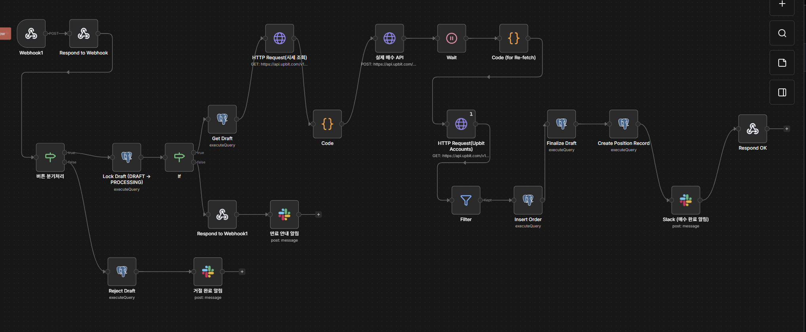
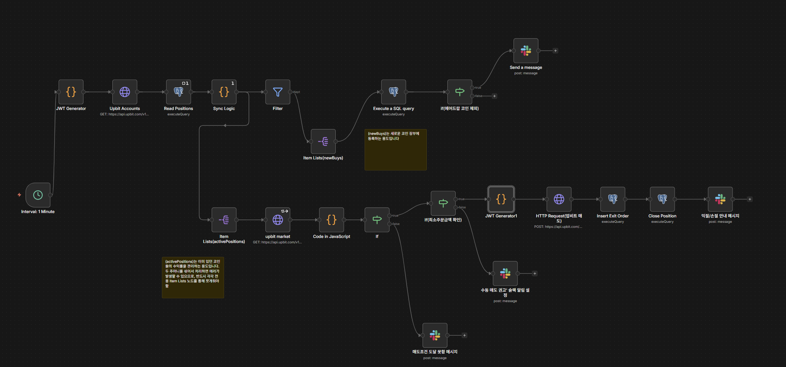

n8n 기반 가상자산 자동 매매 시스템
n8n 워크플로우와 AI Agent를 결합한 이벤트 기반 가상자산 매매 오케스트레이션
주요 기능
Slack Webhook 노드를 활용하여 사용자와의 실시간 인터페이스를 구축하고, GPT-4 mini Agent가 시장 데이터 조회 툴을 호출하여 분석 결과를 제공
Elasticsearch, Logstash, Kibana를 연동하여 거래 로그를 수집하고, 수익률 및 실시간 자산 변동 추이를 시각화하는 대시보드 구축 (Data DR 적용)
AI가 생성한 투자 제안서(Draft)를 사용자에게 Slack 메시지로 전달하고, 사용자의 명시적인 승인 액션이 발생할 때만 실제 주문이 실행되는 안전 장치 마련
PostgreSQL 트랜잭션을 활용해 주문 생성부터 체결까지의 전체 과정을 Finite State Machine(FSM) 형태로 관리하여 데이터 정합성과 중복 주문 방지
워크플로우 설계
기능별로 분리된 3가지 핵심 워크플로우 (AI 챗봇, 투자 제안, 포지션 감시)
#1 AI 기반 트레이딩 챗봇

#2 투자 제안 및 승인 프로세스

#3 포지션 감시 및 자동 청산

트러블슈팅
서버리스 환경의 유동 Outbound IP 문제를 VPC Connector + Cloud NAT 구성을 통해 고정 IP를 확보함으로써 업비트 API 접근 권한 문제 해결
단순 API Key가 아닌 JWT(query_hash 포함) 인증 방식을 n8n Code 노드에서 JavaScript로 직접 구현하여 거래 보안 및 정합성 확보
업비트의 5,000원 이하 주문 제한으로 인한 런타임 에러를 사전 검증 로직으로 필터링하고 수동 관리 모드(KEEP)로 전환하는 예외 처리 구현